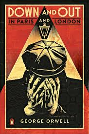
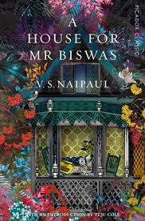

My Favourite Books
|  |
Down And Out In Paris And LondonThis unusual fictional account - in good part autobiographical - narrates without self-pity and often with humor the adventures of a penniless British writer among the down-and-out of two great cities. The Parisian episode is fascinating for its expose of the kitchens of posh French restaurants, where the narrator works at the bottom of the culinary echelon as dishwasher, or plongeur. In London, while waiting for a job, he experiences the world of tramps, street people, and free lodging houses. In the tales of both cities we learn some sobering Orwellian truths about poverty and society. See on Goodreads Buy on Amazon |

|
Spring SnowTokyo, 1912. The closed world of the ancient aristocracy is being breached for the first time by outsiders - rich provincial families, a new and powerful political and social elite. Kiyoaki has been raised among the elegant Ayakura family - members of the waning aristocracy - but he is not one of them. Coming of age, he is caught up in the tensions between old and new, and his feelings for the exquisite, spirited Satoko, observed from the sidelines by his devoted friend Honda. When Satoko is engaged to a royal prince, Kiyoaki realises the magnitude of his passion. See on Goodreads Buy on Amazon |
|  |
A House For Mr. BiswasMohun Biswas has spent his 46 years of life striving for independence. Shuttled from one residence to another after the drowning of his father, he yearns for a place he can call home. He marries into the Tulsi family, on whom he becomes dependent, but rebels and takes on a succession of occupations in a struggle to weaken their hold over him. See on Goodreads Buy on Amazon |